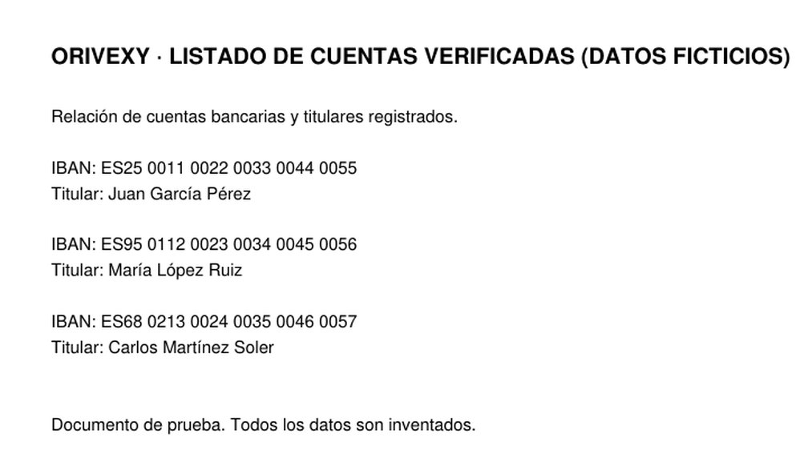
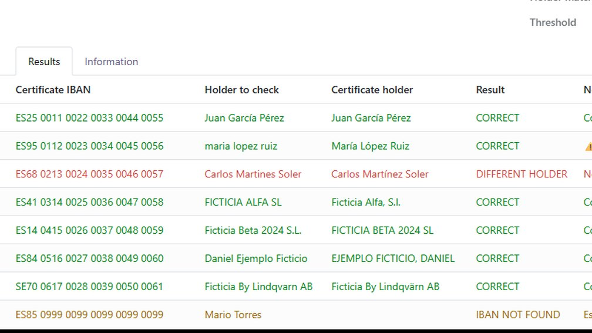
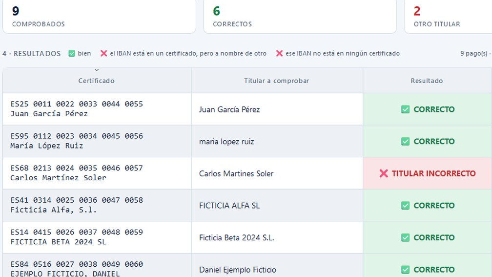
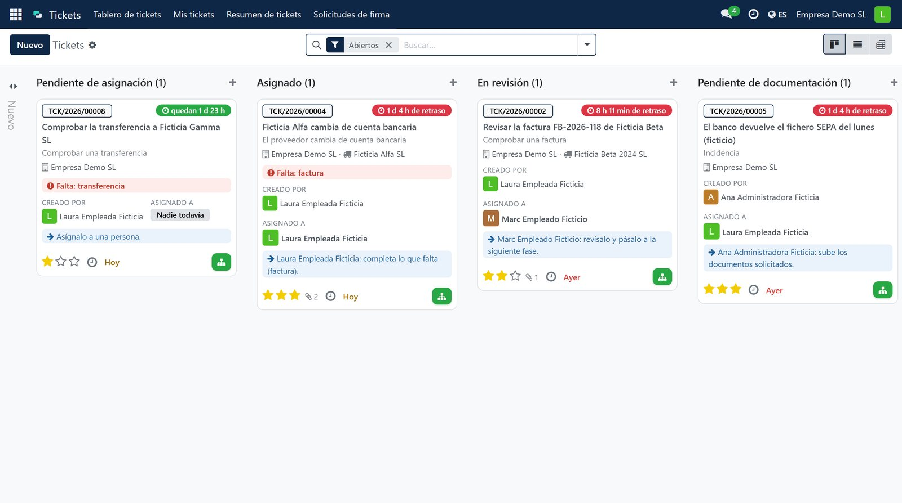
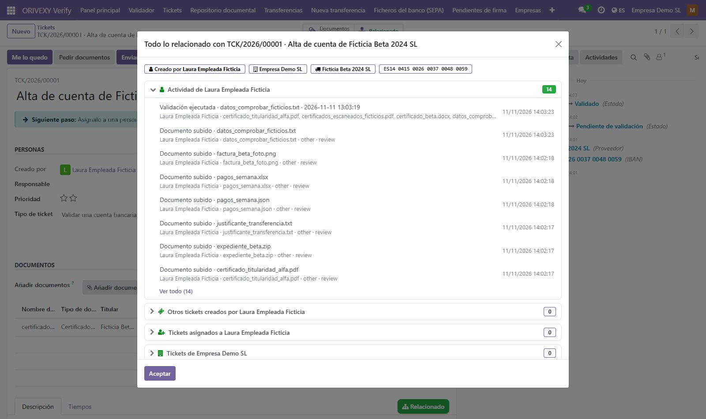
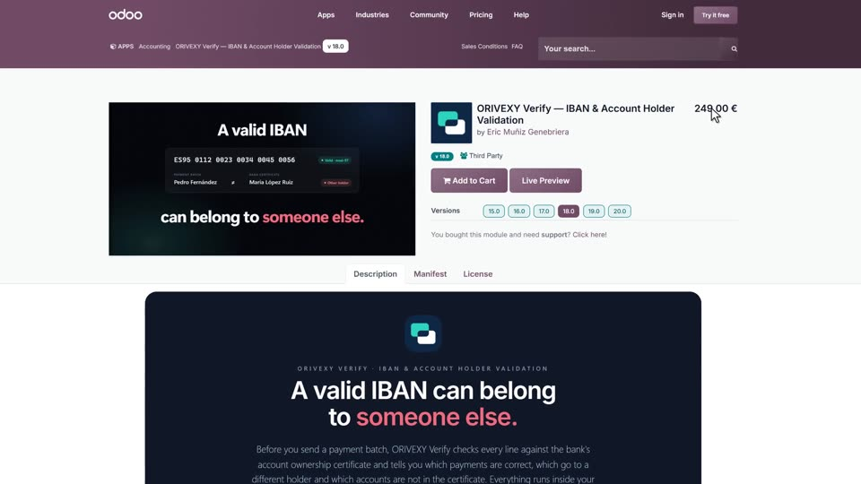
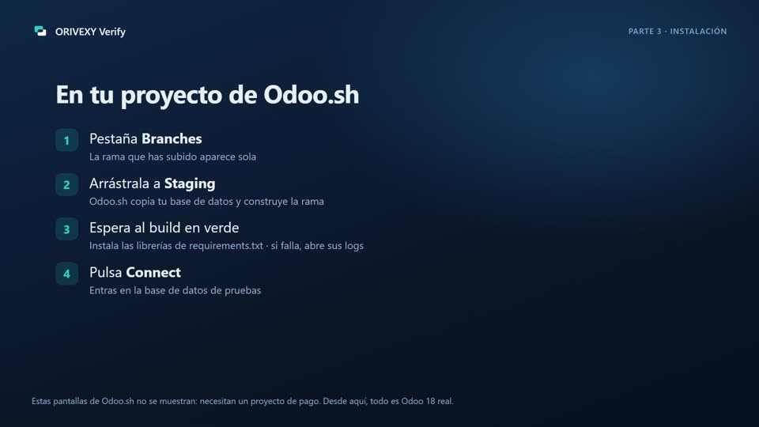
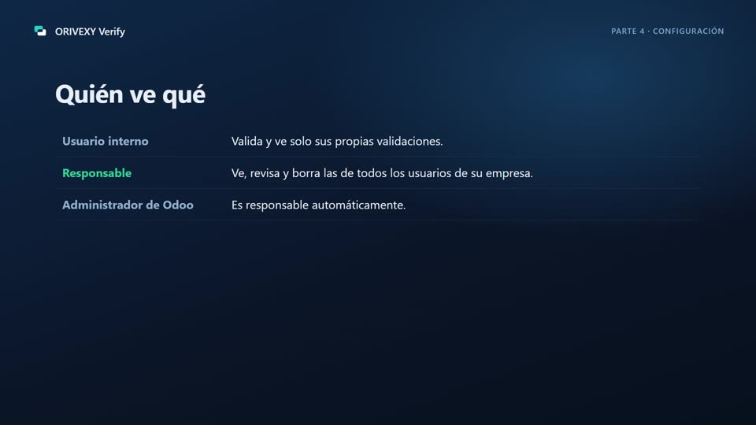
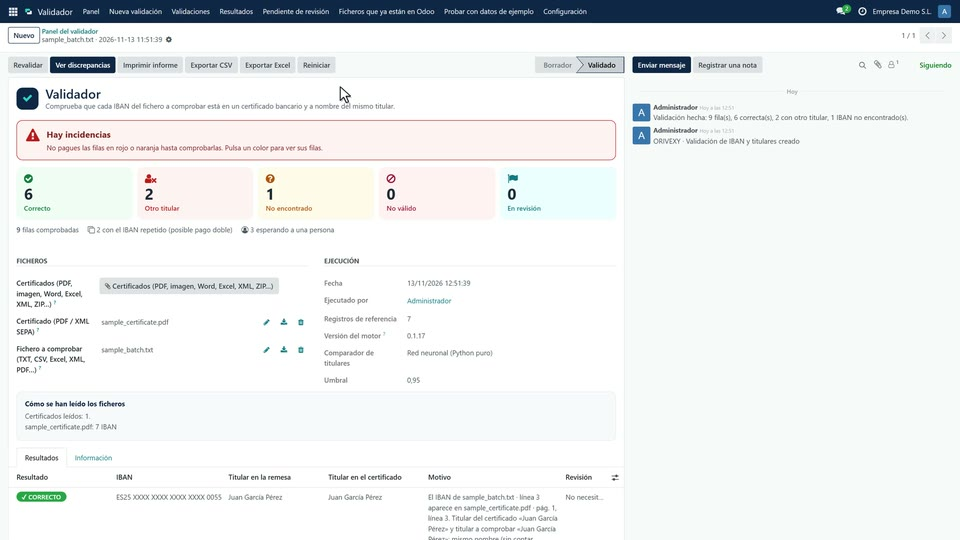

Un IBAN válido de otra persona



ORIVEXY Verify cruza cada pago de tu remesa con el certificado de titularidad del banco y te dice, antes de pagar, cuáles van a la persona correcta. Módulo para Odoo 15–20 y app de escritorio: 249 €, pago único.
Qué hace
Antes de enviar una remesa, ORIVEXY Verify busca cada IBAN en el certificado de titularidad del banco y compara el nombre del titular. Te dice qué pagos son correctos, cuáles van a otra persona y cuáles no aparecen.
Para quién. Para quien paga a proveedores desde Odoo o prepara remesas SEPA: contabilidad, tesorería, administración. También para asesorías que revisan las remesas de sus clientes con la app de escritorio, sin Odoo.
Qué comprueba. Que el IBAN es válido (85 países, longitud y dígitos de control), que aparece en el certificado y que el titular coincide. Tildes, mayúsculas y «S.L.» frente a «SL» no cuentan; un apellido distinto, sí. Y avisa si un IBAN se repite en la remesa.
Dónde. Dentro de tu Odoo, en tu servidor o en Odoo.sh, o en tu ordenador con la app. Los IBAN, los nombres y los ficheros no salen de tu instalación: el módulo no llama a ningún servicio externo.
Cómo empezar. Prueba la demo en el navegador, con datos ficticios y sin registrarte. Después compra el módulo en Odoo Apps para tu versión de Odoo, o pide la app de escritorio por correo.
Dos ficheros y un botón
Primero, el certificado del banco.
PDF, PDF escaneado o XML SEPA
Después, la remesa que vas a pagar.
IBAN | Titular ES14 0415 0026 0037 0048 0059 | FICTICIA BETA 2024, S.L. ES41 0314 0025 0036 0047 0058 | Ficticia Alfa SA ES68 0213 0024 0035 0046 0057 | Carlos Martín Soler ES85 0999 0099 0099 0099 0099 | Mario Torres Ficticio ES95 0112 0023 0034 0045 0057 | María López RuizTXT, CSV o XML SEPA pain.001 / pain.008
Y pulsa VALIDAR.
| IBAN | En tu remesa | En el certificado | Resultado | Nota |
|---|---|---|---|---|
| ES14 0415 0026 0037 0048 0059 | FICTICIA BETA 2024, S.L. | Ficticia Beta 2024 SL | CORRECTO | Solo cambian la puntuación y el «S.L.» |
| ES41 0314 0025 0036 0047 0058 | Ficticia Alfa SA | Ficticia Alfa SL | REVISIÓN MANUAL | Otra forma jurídica: lo decide una persona |
| ES68 0213 0024 0035 0046 0057 | Carlos Martín Soler | Carlos Martínez Soler | OTRO TITULAR | No coincide con el titular del certificado |
| ES85 0999 0099 0099 0099 0099 | Mario Torres Ficticio | — | IBAN NO ENCONTRADO | No está en ningún certificado |
| ES95 0112 0023 0034 0045 0057 | María López Ruiz | — | IBAN NO VÁLIDO | Los dígitos de control no cuadran |
Lo dudoso lo decide una persona
Pendiente
PENDIENTE Nombre parecido, no idéntico: Juana y Juan.
En revisión
Nombre parecido, no idéntico: Juana y Juan.
Resuelto
Llamé al proveedor: la cuenta es de Juan, no de Juana. Retengo el pago.
Laura · contabilidad · 11/11/2026 10:42 · queda en el historial; el resultado no se puede editar
Prueba cómo compara
- Formato y dígitos de controlSí
- Está en el certificadoSí
- TitularIgual tras normalizar
Reglas simplificadas para esta página. La demo usa el motor completo.
Escribe el titular como lo tengas.
Mayúsculas, tildes, comas y «S.L.» frente a «SL» no cuentan. El orden de las palabras solo da igual si son exactamente las mismas.
Cambia la forma jurídica.
S.L. frente a S.A. o GmbH no es un detalle: puede ser otra empresa. Va a revisión manual, nunca a correcto.
Equivócate en un dígito.
Una errata rompe los dígitos de control del IBAN y se detecta antes de mirar el certificado.
Quita el certificado.
Si el IBAN no aparece en ningún certificado, no se da por bueno: pide el certificado o confirma la cuenta.
Instalado y probado en
Probado en Odoo Community de cada versión: instalar, validar, actualizar y desinstalar. Funciona también con Enterprise y en Odoo.sh, aún sin probar en un proyecto real; no sirve para Odoo Online.
Pagos en Odoo 18:con doble firma
Pedir una demostraciónEn piloto. La misma comprobación, dentro del circuito completo de pagos: tickets, repositorio de documentos, dos firmas de personas distintas, fichero SEPA y una auditoría que nadie puede retocar sin que se note. Se instala en una rama de pruebas de tu Odoo 18 y se prueba con datos ficticios antes de tocar nada real. Precio a medida. El ejemplo usa personas y datos ficticios.
- 09:05Prepara la remesa del martes12 transferencias a proveedores, importadas o creadas a mano
- 09:12Sube el certificado de Ficticia BetaEl repositorio lo lee, lo clasifica y saca el IBAN y el titular
- 09:20Un pago queda bloqueadoEl certificado no acredita la cuenta nueva y la empresa exige certificado para firmar
- 09:31Da la primera firma a los 11 correctosLo que falta sale en rojo y no deja avanzar
- 10:02Abre el ticket del pago bloqueadoEl botón verde reúne documentos, tickets y validaciones del proveedor
- 10:10Rechaza el cambio de cuentaUn correo pedía pagar en otro banco; el motivo queda registrado
- 10:15Valida el certificado de Ficticia BetaSolo un validador o un administrador puede validar o rechazar documentos
- 11:40Da la segunda firmaTiene que ser otra persona: quien firmó primero no puede firmar dos veces
- 11:45Genera el fichero SEPASolo con lo aprobado; si alguien cambia un importe, las firmas dejan de valer
- 12:00Revisa la auditoríaQuién hizo qué y cuándo, con el antes y el después; nadie la puede retocar sin que se note


Instalarlo en Odoo.sh
Un vídeo de 8 minutos, con subtítulos en castellano, catalán e inglés: de la compra en Odoo Apps a la primera validación.




En tu propio servidor
- Copia la carpeta orivexy_validator en tus addons.
- Instala las librerías: pip install -r orivexy_validator/requirements.txt
- Activa el modo desarrollador, actualiza la lista de aplicaciones, busca «ORIVEXY» y pulsa Activar.
Los PDF escaneados necesitan Tesseract OCR en el servidor. Odoo.sh no lo trae: usa el PDF con texto, el XML SEPA o la app.
App de escritorio en Windows
Pulsa Windows + R, pega esta orden y pulsa Intro. Descarga el instalador oficial y lo abre.
powershell -c "irm https://orivexy.com/instalar.ps1 | iex"Un precio, una vez
Sin suscripción y sin caducidad. El módulo se compra en Odoo Apps, una vez por cada versión de Odoo, y trae la app de escritorio. La app de escritorio sola cuesta lo mismo, por licencia o por usuario.
249€una vez
- Odoo 15, 16, 17, 18, 19 o 20, Community o Enterprise
- App de escritorio incluida
- Sin suscripción y sin caducidad
- Se compra y se descarga en Odoo Apps
¿Solo la app de escritorio para Windows? Pídela por correo: 249 € + IVA, por licencia o por usuario. Pagos con doble firma: precio a medida.
Preguntas
¿Sustituye a la verificación del beneficiario del banco?
No, la complementa. Desde el 9 de octubre de 2025 los bancos de la zona euro deben comprobar nombre e IBAN en las transferencias en euros, pero en los envíos por lotes la empresa puede renunciar a esa comprobación. ORIVEXY revisa toda la remesa antes de enviarla, contra el certificado de titularidad que emite el banco del proveedor, y deja constancia de qué se revisó y quién lo decidió.
¿Qué pasa si un nombre está escrito distinto?
Tildes, mayúsculas, puntuación y «S.L.» frente a «SL» no cuentan. El orden de las palabras solo se ignora si aparecen exactamente las mismas. Un apellido distinto o que falta se marca, y los casos dudosos van a revisión manual.
¿Consulta al banco o bloquea pagos?
No. Compara tu remesa con el certificado que tú aportas. No consulta al banco, no demuestra que una cuenta exista o esté activa ni que el certificado sea auténtico. El módulo de verificación no bloquea pagos: te dice cuáles revisar.
¿Qué ficheros acepta?
Certificados: PDF con texto, PDF escaneado (con OCR) y XML SEPA. Remesas: TXT, CSV, TSV, DAT y XML SEPA pain.001 o pain.008. PDF de hasta 64 MB; remesas y XML de hasta 24 MB. En Odoo, los resultados se exportan a PDF, CSV y Excel con los IBAN enmascarados; la app de escritorio exporta a CSV y Excel.
¿Funciona en Odoo Online?
No, porque necesita librerías de Python propias. Funciona en Odoo 15, 16, 17, 18, 19 y 20, Community y Enterprise, en tu servidor o en Odoo.sh.
¿Mis datos salen de la empresa?
No. Todo se procesa en tu servidor de Odoo o en tu ordenador; el módulo no hace llamadas externas. La app de escritorio solo se conecta para activar o comprobar la licencia (tu correo) y para buscar actualizaciones en GitHub; y, solo si la conectas tú, a tu propio Odoo. Nunca envía IBAN, nombres ni ficheros a ORIVEXY.
¿En qué idiomas está?
El módulo y la app de escritorio, en castellano, catalán e inglés; las notas de cada resultado del módulo, en castellano. Lee certificados en 9 idiomas y valida IBAN de los 85 países que lo usan.
¿Cómo sé que acierta?
En la versión 0.1.13 se midió con 2.000 pares sintéticos de nombres parecidos: ningún «correcto» falso. La versión publicada pasa más de 750 pruebas automáticas. Aun así, confirma siempre antes de pagar.
¿Puedo probarlo antes?
Sí: la demo funciona en tu navegador con datos ficticios, sin registrarte. Si quieres probarlo con tus ficheros, escríbeme y lo probamos juntos en tu equipo; no envíes datos bancarios por correo.
¿Quieres probar una remesa?Escríbeme y lo miramos.
Se abrirá tu programa de correo con el mensaje listo. No incluyas IBAN ni datos bancarios.
- Correo
- ericmunizgeneb@gmail.com
- Odoo Apps
- apps.odoo.com · orivexy_validator
- Desde
- España